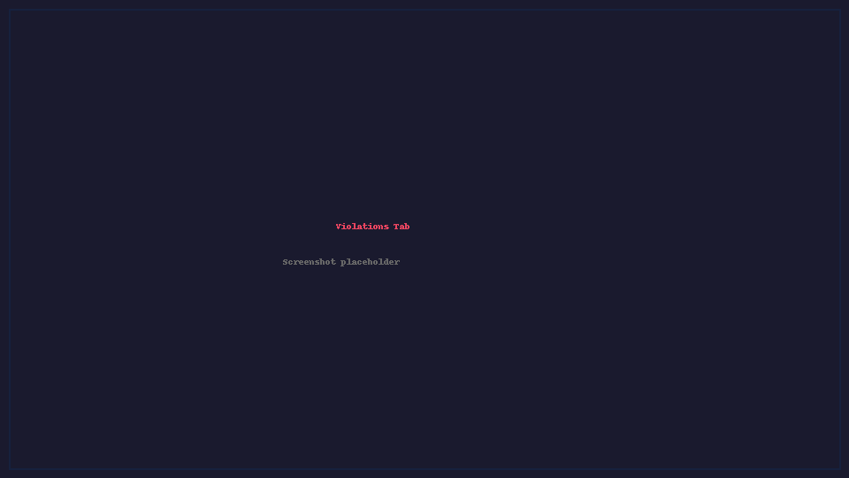
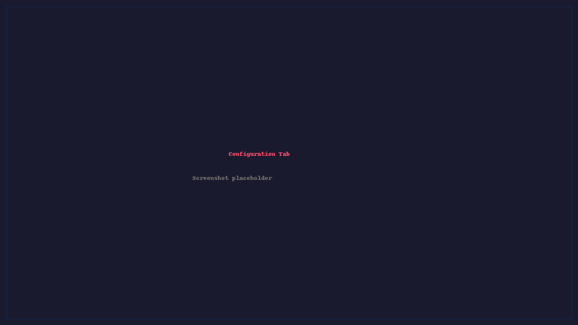

Interactive Console UI
The interactive terminal UI is an optional build-time feature (disabled by
default, since the primary use of sqc is CLI + CI/CD). Build with the tui
feature to enable it:
cargo build --release --features tui
Then launch it with --interactive (or -i):
sqc /path/to/project --interactive
sqc /path/to/project -d /path/to/project -i # with cross-file context
Running --interactive against a binary built without the tui feature
exits with an error telling you to rebuild with --features tui.
The UI is built with ratatui and provides two tabs: Violations and Configuration.
Note
Screenshots below show the TUI running in a standard terminal emulator. The UI adapts to terminal size and supports 256-color and truecolor terminals.
Violations Tab
{kind=link}

Violations tab with violations grouped by file. The right panel shows a source preview with the violation line highlighted.
The Violations tab displays all detected violations with grouping, sorting, selection, and inline source preview capabilities.
Configuration Tab
{kind=link}

Configuration tab showing CERT C rule categories. Toggle individual rules on/off and export custom manifests.
The Configuration tab lets you browse all 311 rules by category, toggle them on/off, and export a custom manifest file.
Keyboard Reference
Tab Switching
Key |
Action |
|---|---|
|
Switch to Violations tab |
|
Switch to Configuration tab |
|
Toggle focus between violations list and preview |
Violations Tab – Selection
Key |
Action |
|---|---|
|
Toggle checkbox / expand-collapse group header |
|
Select all violations |
|
Select all in current group |
|
Deselect all violations |
|
Deselect all in current group |
Violations Tab – Actions
Key |
Action |
|---|---|
|
Scan repository for violations |
|
Suppress checked violations ( |
|
Export checked violations to file (CSV) |
|
Toggle suppressed violations and clean files |
|
Toggle file preview panel |
Violations Tab – Sorting / Grouping
Key |
Action |
|---|---|
|
Default sort order |
|
Group by violation ID (CERT rule) |
|
Group by file path |
|
Group by filename |
|
Reverse sort direction |
Configuration Tab
Key |
Action |
|---|---|
|
Toggle rule enabled/disabled |
|
Save configuration to file |
|
Collapse / expand category group |